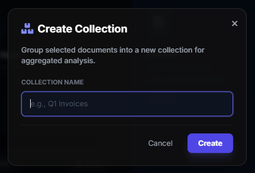

Collections & Aggregation
Collections allow you to group dynamic project documents together to perform aggregated analysis across massive datasets.

Creating a Collection
While the Knowledge Base holds static reference materials, Collections are actively used to group uploaded documents (like batches of invoices, resumes, or logs) that you want to analyze as a single unit.
- Go to the Dashboard and switch to the "All Documents" or list view.
- Select multiple completed documents using the left-hand checkboxes.
- In the Bulk Action bar that appears at the bottom, click the Add to Collection button.
- Name your collection (e.g., "Q3 Financial Invoices").
Map-Reduce Aggregation: How it Works
Often, you need to answer a question that requires reading 50 different documents. Feeding all 50 documents into an LLM at once will crash it due to Context Window limitations. Parsifi solves this using an automated Map-Reduce Engine.
Step 1: The "Map" Phase (Individual Analysis)
Before aggregating, you must extract the relevant data from each individual document. Run a Workspace Pipeline (e.g., "Extract Invoice Total") on every document in your "Q3 Financial Invoices" collection. Parsifi asks the LLM to process each one independently.
Step 2: The "Reduce" Phase (Aggregation)
Once all children are analyzed, navigate to the Collections tab on the Dashboard and click your Collection. You can now run a final, overarching prompt against the Collection itself.
By using the {{children.analysis}} Tag in your Prompt, Parsifi will dynamically grab the short,
extracted outputs from Step 1 (the invoice totals) and consolidate them into a single prompt payload for
your chosen LLM. Because it's only aggregating the results, it easily fits within the memory
limits.
Practical Example
- The Question: What was the total Q3 spend across our 15 vendors?
- Map Result: 15 individual, short summaries (e.g., "Vendor A: $1200", "Vendor B: $400").
- Reduce Prompt: "Calculate the total sum of these expenses: {{children.analysis}}"
- Final Result: "The total Q3 spend was $45,000."
{{children.content}} on large collections
unless the documents are extremely tiny (like 1-page receipts). Always use
{{children.analysis}} to aggregate summarized data and prevent truncation errors.